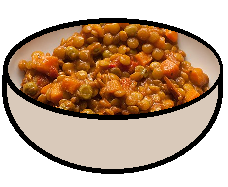

Spicy Lentils With Carrots and Caramelized Tomato Paste

Description
Caramelized tomato paste is delicious.
Ingredients
- 1 cup dry lentils
- 2 carrots, chopped
- 1 tbsp caramelized tomato paste
- 2 cloves garlic, minced
- dash of crushed red pepper flakes
- salt & pepper to taste
- 2 tbsp olive oil
Directions
- Place lentils and carrots in medium saucepan. Add water to about halfway up the saucepan and bring to a boil. Reduce heat and simmer 20 minutes. Test for doneness, drain in colander.
- Add olive oil to your empty saucepan. Sauté garlic and red pepper. Add the tomato paste with a small portion of the lentils & carrots and mix until even. Keep adding and mixing the rest of the lentils & carrots. Mix in salt and pepper. Turn off heat.